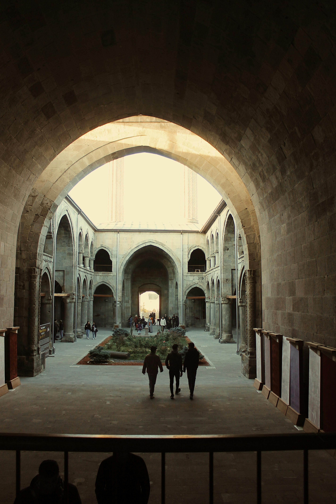
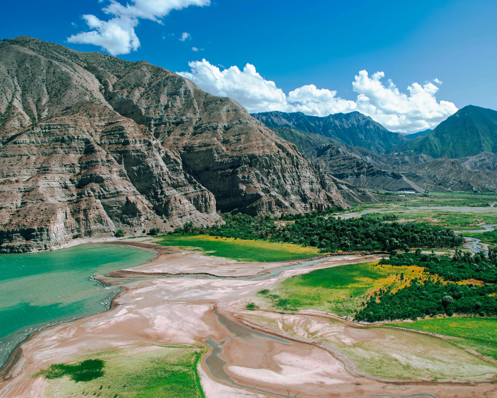
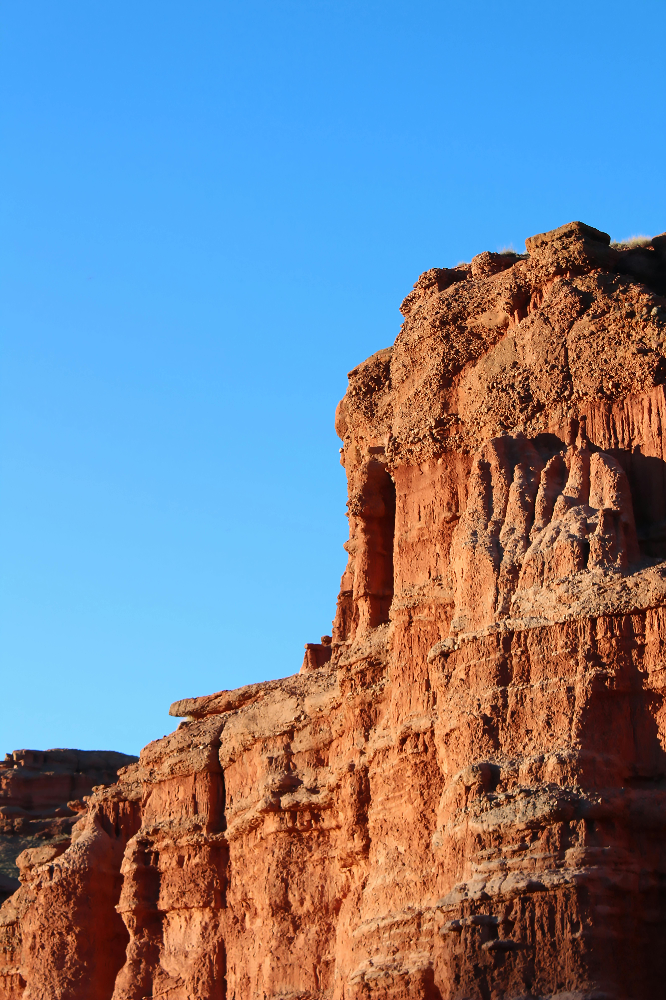
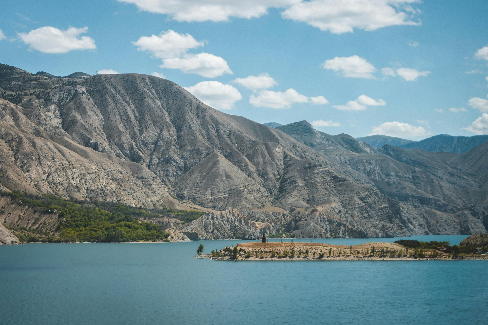
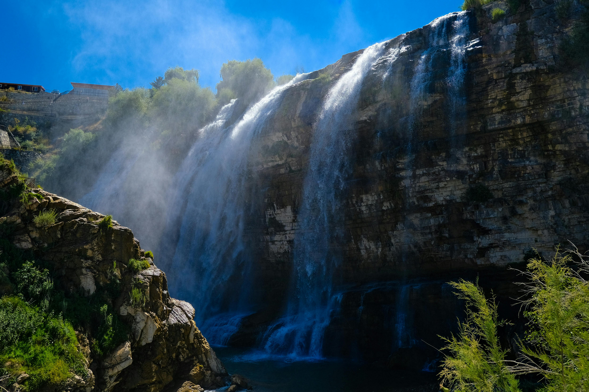

Erzurum, Türkiye'nin Erzurum ilinin merkezi olan şehirdir.Merkezi Erzurum olan il, 749.993[3] nüfusu ile Doğu Anadolu Bölgesi'nin en büyük üçüncü ilidir. .Erzurum Ovası'nın güneydoğu kenarında, bu ova ile Palandöken dağının temas sahasında kurulmuş olan Erzurum, tarihin ilk dönemlerinden beri yerleşim yeridir. Şehir, tarihî eserleri ve kış sporları tesisleriyle de tanınır.

Dünya standartlarında tasarlanmış kayak pistleriyle günde 12.000 kişinin aynı anda kayak yapmasına imkan veren merkezde 10 telesiyej, 2 baby lift, 1 teleski ve 1 gondol lift gibi teknik olanaklar da sunuluyor. Telesiyejlerle ulaşabileceğiniz 1000 metre yükseklikteki Ejder Tepesi’nde muhteşem panoramik kış fotoğrafları çekebileceğiniz Palandöken’in kolay, orta ve zor olarak düzenlenmiş pistlerinde ise her yaş grubu için kayak ve snowboard eğitimleri de alabilirsiniz.

Erzurum'un en bilinen ve çok ziyaret edilen doğa harikalarından biri olan Tortum Şelalesi, Türkiye'nin en büyük, dünyanın ise 3. büyük şelalesi olmasıyla özel bir öneme sahip. 48 metre yükseklik ve 21 metre genişliğiyle benzersiz bir manzara sunan Tortum Şelalesi’ni özellikle bahar ve yaz aylarında düzenlenen fotoğrafçılık ve doğa gezileriyle keşfe çıkabilir, büyüleyici doğal güzellikler arasında yılın yorgunluğunu atabilirsiniz..

Günümüzde Türk İslam Eserleri ve Etnografya Müzesi olarak hizmet veren Yakutiye Medresesi, Erzurum'un en önemli ve mutlaka görülmesi gereken tarihi yapılarından biri. 1310 yılında İlhanlı hükümdarı Sultan Olcaytutarafından inşa ettirilen büyüleyici taş yapı, Anadolu inşa edilmiş en büyük kapalı avlulu, eyvanlı ve revaklı medrese olmasıyla da özel bir tarihi öneme sahip. Orijinal mimarisini günümüze kadar korumayı başaran ve uzun yıllar boyunca dini eğitimlerin verildiği tarihi medrese, 1991 yılında restore edilerek etnografya müzesi olarak hizmete açıldı.

2000 metre uzunluğu bulan devasa surlarıyla şehrin en önemli tarihi hazinelerinden biri olan Erzurum Kalesi, yerli ve yabancı turistlerin ilk uğradığı yerlerden biri. 415 yılında Roma İmparatorluğu döneminde inşa edilen ve uzun tarihinde Asur, Pers, Roma, Bizans, Osmanlı dönemlerinde aktif olarak kullanılan devasa kaleye Saltuklu Beyliği döneminde de İslami mimari özelliklerini yansıtan çeşitli eklemeler yapılmış.

Erzurum’da her doğa tutkununun mutlaka keşfetmesi gereken bir tabiat güzelliği olan Tortum Gölü, Erzurum ile Artvin arasında şehir merkezine yaklaşık 1,5 saat uzaklıkta yer alıyor. Doğayla iç içe zaman geçirmek için gidebileceğiniz en güzel yerlerden olan ve rehberli doğa yürüyüşlerinin değişmez adreslerinden biri haline gelen Tortum Gölü, bir heyelanla Tortum Çayı’nın kapanmasıyla oluşan bir heyelan set gölü..